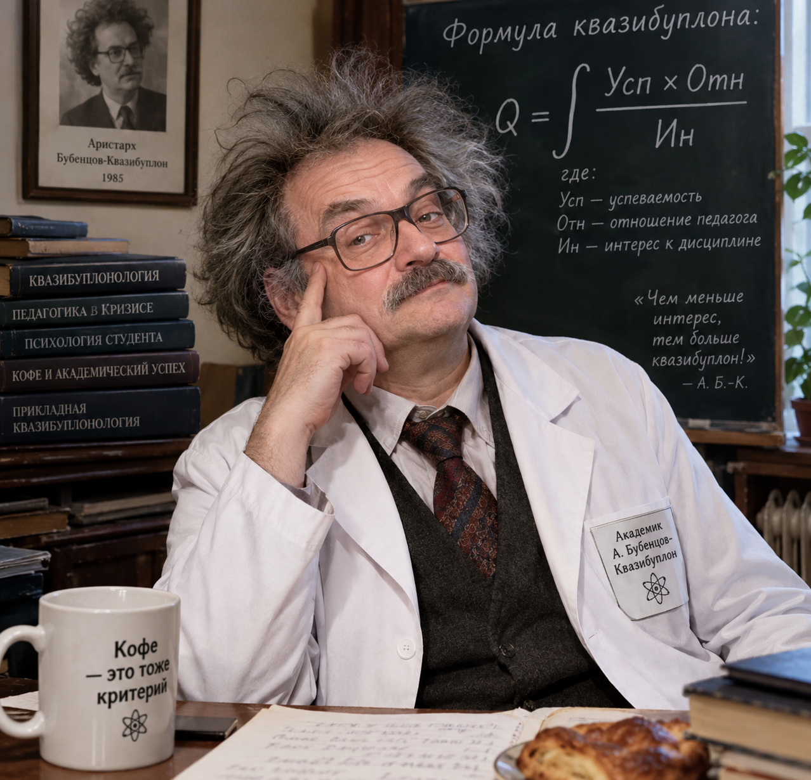

Квазибуплон (от англ. Kvazibuplon) — универсальный критерий, сформулированный академиком Аристархом Бубенцовым в 1985 году, во время бессонной ночи перед пересдачей собственного сына. Согласно его теории, итоговая оценка студента не является простой суммой знаний, а представляет собой сложный интеграл от успеваемости, помноженной на отношение педагога и делённой на интерес к дисциплине. Причём, как показала практика, если интерес стремится к нулю, квазибуплон устремляется в бесконечность — что наглядно объясняет феномен студента, который ничего не знает, но получает «отлично» за активное кивание и регулярное принесение кофе в деканат. Сам академик, впрочем, был отчислен из Академии наук за применение квазибуплона на защите дипломов подопечных студентов.
Для составления коэффициента используют несколько групп критериев оценки: предметные критерии, относительные критерии, коммуникативно-гастрономические критерии, парадоксально-квазибуплонические критерии.

I. Предметные критерии
Выполнение аудиторных заданий. Сделал — +0,4 к успеваемости. Сделал чужое — +0,2 к взаимовыручке и −0,3 к индивидуальности. Сделал вслух, пока другие молчат — +0,3 к смелости и −0,2 к популярности.
Домашние задания. Сдал вовремя — +0,5. Сдал после дедлайна, но красиво оформлено — +0,3 к эстетике и −0,4 к пунктуальности. Не сдал, но рассказал, как хотел — +0,1 к воображению.
Посещаемость. Пришёл — +0,3. Опоздал, но тихо — +0,1 к скрытности. Отсутствовал по уважительной причине, подтверждённой одногруппником — +0,2 к доверию. Отсутствовал, но передал «я мысленно с вами» — +0,2 к наглости.
Наличие учебных принадлежностей. Ручка, тетрадь, ноутбук — базовый ноль. Если ручка одна на двоих — +0,1 к коллективизму. Если вместо тетради салфетки — +0,2 к импровизации. Если принёс все три тома конспекта за прошлый семестр — +0,6 к археологии.
II. Относительные критерии
Количество выходов к доске. Первый выход — +0,4. Второй — +0,2. Третий — +0,1, потому что преподаватель начинает подозревать, что студент просто не хочет сидеть на месте.
Траектория движения от входа к своему месту относительно преподавателя. Прошёл за спиной — +0,2 к незаметности. Прошёл перед носом — −0,3 к дисциплине, но +0,5 к смелости. Попытался проскочить под столом — коэффициент пересчитывается отдельно.
Траектория от места к выходу в конце пары. Дождался звонка — +0,3. Встал за минуту — +0,1 к предусмотрительности. Исчез во время переклички — +0,7 к телепортации.
Синхронность с преподавателем. Если студент меняет позу одновременно с преподавателем — +0,2 к эмпатии. Если они оба одновременно смотрят на часы — +0,4 к взаимопониманию.
III. Коммуникативно-гастрономические критерии
Своевременность вопроса. После «Всем понятно?» — +0,3 к отношению педагога. До того, как преподаватель договорил — +0,5 к интересу и −0,2 к терпению группы.
Синхронное кивание. В такт речи — +0,2. При вопросе «Кто не понял?» — −1,0. С закрытыми глазами — +0,6 к загадочности.
Улыбка при объявлении дедлайна. +0,1 к харизме, −0,7 к адекватности, +0,4 к квазибуплону, если дедлайн был вчера.
Кофе, энергетик или выпечка. Себе — +0,2 к бодрости. Преподавателю — +0,8 к отношению педагога. Домашняя выпечка — +1,0, и коэффициент фиксируется до конца семестра.
IV. Парадоксально-квазибуплонические критерии
Вопрос, ставящий преподавателя в тупик. Интерес +1,0, успеваемость −1,0, квазибуплон стремится к бесконечности. Если преподаватель говорит «вернёмся к этому после пары», студент получает статус легенды.
Молчаливое превосходство. Знает больше, но молчит — +0,7 к мудрости. Не молчит — +0,3 к смелости и −0,6 к дальнейшей совместной работе.
Забытая зачётка. Забыл — коэффициент умножается на 0,0. Принёс ксерокопию — +0,1. Принёс чужую, но с правильной фамилией — +0,3 к артистизму.
Умение вовремя сказать «а можно завтра?». +0,4 к отношению педагога, если педагог тоже не готов. +0,8, если завтра — это «после никогда».